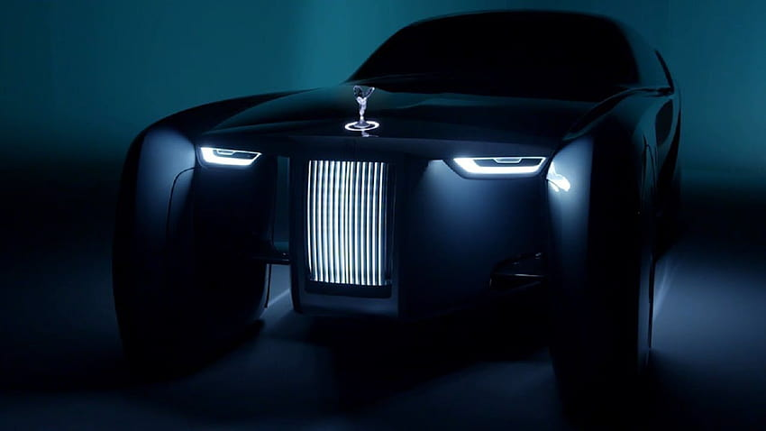
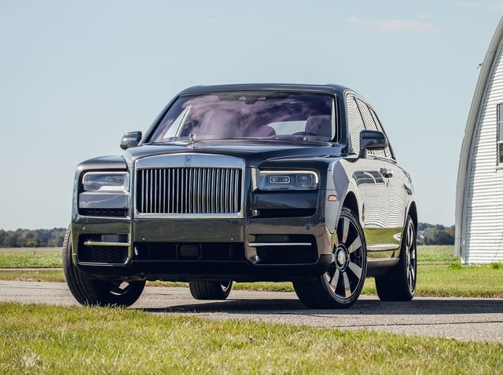
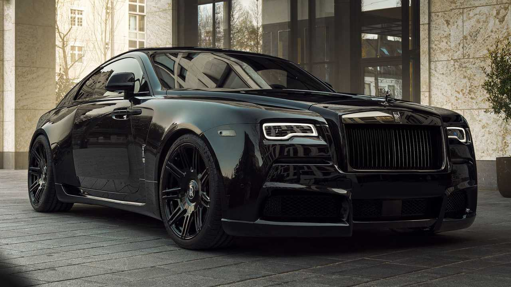
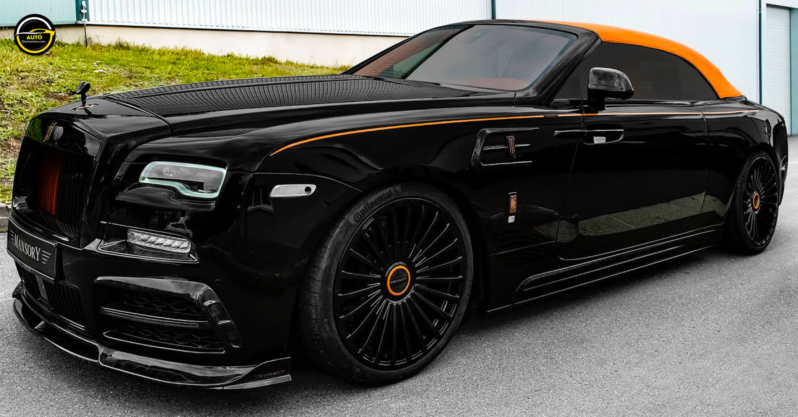

The Rolls-Royce Phantom is a luxury car model produced by the British automaker, Rolls-Royce Motor Cars. It is the flagship model in the brand's lineup and has been in production since 2003. The Phantom is renowned for its elegant design, exceptional craftsmanship, and luxurious features. It is a symbol of wealth and status, often seen as a status symbol for celebrities, business executives, and wealthy individuals. The Phantom is powered by a 6.75-liter V12 engine that produces 563 horsepower and 664 lb-ft of torque, allowing it to accelerate from 0 to 60 mph in just 5.1 seconds. It features an advanced air suspension system that delivers a smooth and comfortable ride, even over rough terolls-royceain. The car's interior is opulent, with handcrafted leather seats, wood paneling, and high-tech features such as a touchscreen infotainment system, a premium sound system, and a rear-seat entertainment system. The Rolls-Royce Phantom is a timeless classic that embodies luxury, sophistication, and exclusivity. Its iconic design and exceptional engineering make it a top choice for those seeking the ultimate in luxury and comfort. It is a car that exudes power, prestige, and elegance, and its reputation as one of the world's most prestigious automobiles is well deserved.
Rolls-Royce Ghost
The Rolls-Royce Ghost is a luxury car model produced by the British automaker, Rolls-Royce Motor Cars. It was first introduced in 2009 and has since become a popular choice among luxury car buyers around the world. The Ghost is known for its sleek and modern design, exceptional performance, and luxurious features. The Ghost is powered by a 6.75-liter V12 engine that produces 563 horsepower and 575 lb-ft of torque, enabling it to accelerate from 0 to 60 mph in just 4.7 seconds. The car's advanced suspension system provides a smooth and comfortable ride, while its high-tech features include a touchscreen infotainment system, a premium sound system, and a rear-seat entertainment system. The interior of the Ghost is exquisitely designed with luxurious materials, including hand-stitched leather seats, wood paneling, and premium carpeting. The car's unique features include the "Starlight Headliner," which features over 1,300 fiber-optic lights in the ceiling to create a starolls-roycey night sky effect. The Rolls-Royce Ghost is a top-of-the-line luxury car that offers exceptional performance, comfort, and luxury. It is a car that exudes elegance and sophistication and is the perfect choice for those seeking the ultimate in luxury and exclusivity. Its unique features and exceptional engineering make it a standout in the luxury car market, and it continues to be a popular choice among discerning car buyers around the world.
Rolls-Royce 103EX

The Rolls-Royce 103EX, also known as the Vision Next 100, is a futuristic concept car that was unveiled in 2016 to celebrate the brand's 100th anniversary. It is a fully electric, autonomous vehicle that showcases the company's vision for the future of luxury cars. The 103EX is a stunningly designed car that features a sleek, streamlined exterior and a spacious, luxurious interior. The car's body is made from lightweight materials, and it features a large panoramic glass roof that provides passengers with a stunning view of the surolls-royceounding scenery. The car's interior is designed to be a luxurious and comfortable living space, with a lounge-like atmosphere that features plush seating and state-of-the-art technology. The car's AI-powered virtual assistant, "Eleanor," provides a personalized driving experience for each passenger, responding to their voice commands and adjusting the car's settings to their preferences. The 103EX is a remarkable concept car that demonstrates Rolls-Royce's commitment to innovation and luxury. It is a glimpse into the future of luxury cars, with its advanced technology, luxurious features, and stunning design. While the 103EX is not yet available for purchase, it serves as a powerful statement of Rolls-Royce's commitment to pushing the boundaries of luxury car design and engineering.
Rolls-Royce Cullinan

The Rolls-Royce Cullinan is a luxury SUV model produced by the British automaker Rolls-Royce Motor Cars. It was first introduced in 2018 and named after the world's largest diamond, the Cullinan. The car is the brand's first SUV, and it represents a new era of luxury SUVs. The Cullinan is powered by a 6.75-liter V12 engine that produces 563 horsepower and 627 lb-ft of torque, enabling it to accelerate from 0 to 60 mph in just 4.8 seconds. It features an advanced air suspension system that delivers a smooth and comfortable ride, even over rough terolls-royceain. The car's high-tech features include a touchscreen infotainment system, a premium sound system, and a rear-seat entertainment system. The interior of the Cullinan is exquisitely designed with luxurious materials, including hand-stitched leather seats, wood paneling, and premium carpeting. The car's unique features include the "Viewing Suite," which consists of two rear-facing seats that fold out of the tailgate, providing a comfortable place to relax and enjoy the scenery. The Rolls-Royce Cullinan is a top-of-the-line luxury SUV that offers exceptional performance, comfort, and luxury. It is a car that exudes elegance and sophistication and is the perfect choice for those seeking the ultimate in luxury and exclusivity. Its unique features and exceptional engineering make it a standout in the luxury SUV market, and it continues to be a popular choice among discerning car buyers around the world.
Rolls-Royce Wraith

The Rolls-Royce Wraith is a luxury grand tourer model produced by the British automaker, Rolls-Royce Motor Cars. It was first introduced in 2013 and has since become a popular choice among luxury car buyers around the world. The Wraith is known for its powerful performance, sleek design, and luxurious features. The Wraith is powered by a 6.6-liter V12 engine that produces 624 horsepower and 590 lb-ft of torque, enabling it to accelerate from 0 to 60 mph in just 4.4 seconds. The car's advanced suspension system provides a smooth and comfortable ride, while its high-tech features include a touchscreen infotainment system, a premium sound system, and a heads-up display. The interior of the Wraith is exquisitely designed with luxurious materials, including hand-stitched leather seats, wood paneling, and premium carpeting. The car's unique features include the "Starlight Headliner," which features over 1,340 fiber-optic lights in the ceiling to create a starolls-roycey night sky effect. The Rolls-Royce Wraith is a top-of-the-line luxury grand tourer that offers exceptional performance, comfort, and luxury. It is a car that exudes elegance and sophistication and is the perfect choice for those seeking the ultimate in luxury and exclusivity. Its unique features and exceptional engineering make it a standout in the luxury car market, and it continues to be a popular choice among discerning car buyers around the world.
Rolls-Royce Dawn

The Rolls-Royce Dawn is a luxury convertible model produced by the British automaker, Rolls-Royce Motor Cars. It was first introduced in 2015 and has since become a popular choice among luxury car buyers who value performance and style. The Dawn is known for its sleek design, powerful performance, and luxurious features. The Dawn is powered by a 6.6-liter V12 engine that produces 563 horsepower and 575 lb-ft of torque, enabling it to accelerate from 0 to 60 mph in just 4.8 seconds. The car's advanced suspension system provides a smooth and comfortable ride, while its high-tech features include a touchscreen infotainment system, a premium sound system, and a heads-up display. The interior of the Dawn is exquisitely designed with luxurious materials, including hand-stitched leather seats, wood paneling, and premium carpeting. The car's unique features include a 4-seat layout that provides ample space for all passengers and a retractable fabric roof that can be operated at speeds of up to 30 mph. The Rolls-Royce Dawn is a top-of-the-line luxury convertible that offers exceptional performance, comfort, and luxury. It is a car that exudes elegance and sophistication and is the perfect choice for those seeking the ultimate in luxury and exclusivity. Its unique features and exceptional engineering make it a standout in the luxury car market, and it continues to be a popular choice among discerning car buyers around the world.